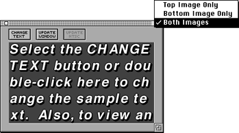

The Sample Text window

Figure 1: FontWriter Sample Text window.
The Sample Text window is for previewing text in a 3DO FontWriter-customized font. It reflects changes made to characters.
A pop-up menu in the top-right corner of the window lets you preview text in the character (top image), its shadow or outline (bottom image), and both images combined.
Window update and text changes
You can make the following changes to the Sample Text window:
- To update the text in the window after editing one or more characters, click the Update Window button.
- To update the text on a TV monitor connected through a 3DO Artist Card or a 3DO Station, click Update NTSC.
- To change the text, click the Change Text button or double-click in the sample text display area.